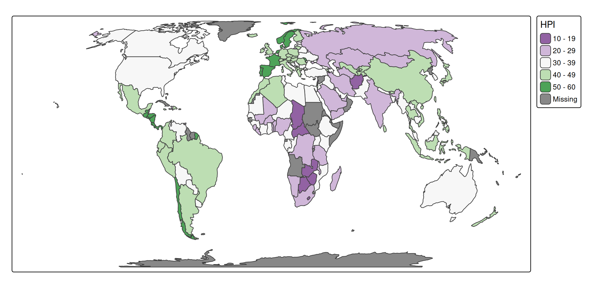
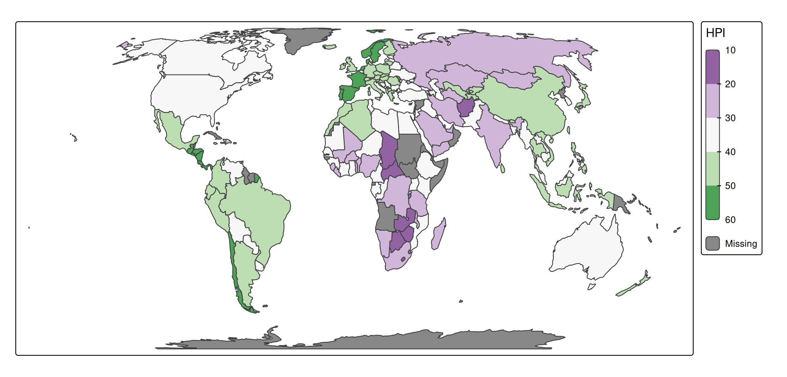

About the data
A spatial data object contained in tmap is called World. It is a data frame with a row for each country. The columns are the following data variables plus an additional geometry column which contains the geometries (see sf package):
names(World)
#> [1] "iso_a3" "name" "sovereignt" "continent" "area"
#> [6] "pop_est" "pop_est_dens" "economy" "income_grp" "gdp_cap_est"
#> [11] "life_exp" "well_being" "footprint" "HPI" "inequality"
#> [16] "gender" "press" "geometry"We specify this object with tm_shape (see other vignette) and for convenience assign it to s:
s = tm_shape(World, crs = "+proj=eqearth")Legend
Each visual variable, e.g. fill in tm_polygons, also has a .legend argument. The most popular properties are illustrated in the next example:
s + tm_polygons(
fill = "HPI",
fill.scale = tm_scale_continuous(values = "pu_gn"),
fill.legend =
tm_legend(
title = "Happy Planex Index",
orientation = "landscape",
width = 60))
#> [plot mode] fit legend/component: Some legend items or map compoments do not
#> fit well, and are therefore rescaled.
#> ℹ Set the tmap option `component.autoscale = FALSE` to disable rescaling.
The legend width is set in number of text line heights, which corresponds to the number of characters. In other words, the resulting width depends on the fontsize, which can be set in tm_legend, but also via the general scale option, which determines the overall ‘scale’ of the map (all line widths, point sizes and font sizes):
s + tm_polygons(
fill = "HPI",
fill.scale = tm_scale_continuous(values = "pu_gn"),
fill.legend =
tm_legend(
title = "Happy Planex Index",
orientation = "landscape",
width = 60)) +
tm_layout(scale = 0.25)
Combine legends
Suppose we want to use both fill and shape to show "economy". Then we can combine the legends as follows:
s +
tm_polygons() +
tm_symbols(
fill = "economy",
shape = "economy",
shape.legend = tm_legend_combine("fill"))
Custom visual values
Suppose, for whatever reason, we would like to change some of the visual values used in the legend symbols. For instance, instead of solid circle lines, thick dotted lines. In that case, we can simply pass on the corresponding visual values lwd and lty to tm_legend():
s +
tm_polygons() +
tm_symbols(
fill = "economy",
fill.legend = tm_legend("Economy", lwd = 2, lty = "dotted"))
Manual legends
s +
tm_polygons() +
tm_add_legend(
title = "Countries",
fill = "grey80",
shape = 22,
size = c(1, 2, 4),
labels = c("Small", "Medium", "Large"))
Layout
The layout of the (standard) legends can be changed via the other arguments in tm_legend().
s +
tm_polygons(
fill = "HPI",
fill.legend =
tm_legend(
title = "Happy Planet Index",
item.height = 1.5,
item.width = 3,
item.r = 0,
item.space = 0.5,
item.na.space = 1,
title.align = "center"))